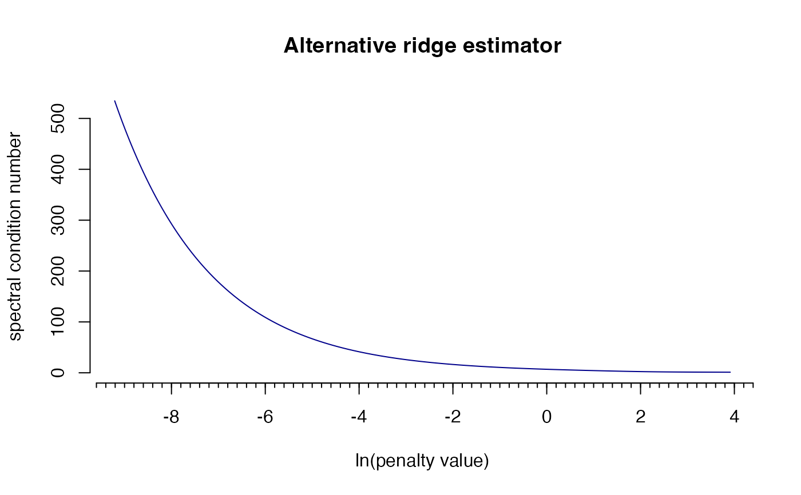

R/rags2ridgesDepr.R
conditionNumberPlot.RdThis function is now deprecated. Please use CNplot instead.
conditionNumberPlot(
S,
lambdaMin,
lambdaMax,
step,
type = "Alt",
target = default.target(S),
norm = "2",
digitLoss = FALSE,
rlDist = FALSE,
vertical = FALSE,
value,
main = TRUE,
nOutput = FALSE,
verbose = TRUE
)Sample covariance matrix.
A numeric giving the minimum value for the penalty
parameter.
A numeric giving the maximum value for the penalty
parameter.
An integer determining the number of steps in moving
through the grid [lambdaMin, lambdaMax].
A character indicating the type of ridge estimator to be
used. Must be one of: "Alt", "ArchI", "ArchII".
A target matrix (in precision terms) for Type I ridge
estimators.
A character indicating the norm under which the condition
number is to be calculated/estimated. Must be one of: "1", "2".
A logical indicating if the approximate loss in
digits of accuracy should also be visualized in the output graph.
A logical indicating if the relative distance to the
set of singular matrices should also be visualized in the output graph.
A logical indicating if output graph should come with
a vertical line at a pre-specified value for the penalty parameter.
A numeric indicating a pre-specified value for the
penalty parameter.
A logical indicating if output graph should contain type
of estimator as main title.
A logical indicating if numeric output should be
returned.
A logical indicating if information on progress should
be printed on screen.
The function returns a graph. If nOutput = TRUE the function
also returns an object of class list:
A numeric
vector representing all values of the penalty parameter for which the
condition number was calculated.
A numeric
vector containing the condition number for each value of the penalty
parameter given in lambdas.
See CNplot.
## Obtain some (high-dimensional) data
p = 25
n = 10
set.seed(333)
X = matrix(rnorm(n*p), nrow = n, ncol = p)
colnames(X)[1:25] = letters[1:25]
Cx <- covML(X)
## Assess spectral condition number across grid of penalty parameter
conditionNumberPlot(Cx, lambdaMin = .0001, lambdaMax = 50, step = 1000)
#> Perform input checks...
#> Calculating spectral condition numbers...
#> Plotting...
